Last revised Dec 08, 2011
Teiid Designer is a graphical data modeling tool that enables rapid definition, integration, management and testing of data services without programming using the Teiid runtime engine.
For more details on Teiid and Teiid Designer visit: http://www.teiid.org
XML Source Data File
Importer
|
|
|
|
In 7.5, we introduced an Flat File import option which simplified the process of constructing the source and view models (including generated transformation SQL) necessary for querying the flat file as a source. In 7.6, we've added an importer which follows the same import steps as the flat file importer but with a backing XML data file. Since this importer is file-based, it utilizes the same specific Data Tools Flat File Connection Profile as the Flat File importer option, but filters on *.xml files instead of *.txt and *.csv. (TEIIDDES-1078) The importer will create a source model containing the three standard text file procedures supported by Teiid. Namely:
The importer will also create a new view model containing a
view table for each of your selected xml source files. Within these
view tables will be generated SQL transformations containing the
"getTextFiles()" procedure from your source model as well as the column
definitions and parameters required for the Teiid TEXTTABLE() function
used to query the data file. You can also choose to update an existing
view model instead of creating a new view model. The XMLTABLE function, as defined in the Teiid documentation, processes xml input to produce tabular ouptut. XMLTABLE([<NSP>,]
xquery-expression [<PASSING>] [COLUMNS <COLUMN>, ... )] AS
name Teiid
Designer
will
construct the full SQL statement for each view table in
the form: ================================================================ title.pmid AS pmid, title.journal AS journal, title.title AS title FROM (EXEC getMeds.getTextFiles('medsamp2011.xml')) AS f, XMLTABLE('$d/MedlineCitationSet/MedlineCitation' PASSING XMLPARSE(DOCUMENT f.file) AS d
COLUMNS
pmid
biginteger PATH 'PMID', journal string PATH
'Article/Journal/Title', title string PATH 'Article/ArticleTitle') AS
title The import
option is labeled File Source (XML) >> Source and View
Model and is shown below in the Import wizard's first page
under the Teiid Designer category.
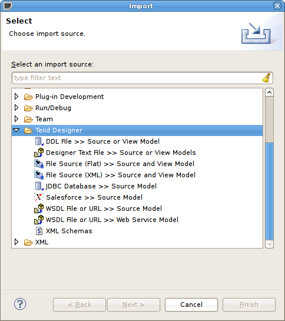 The second page includes options to select either the
XML file on local file system or XML file via remote
URL format. 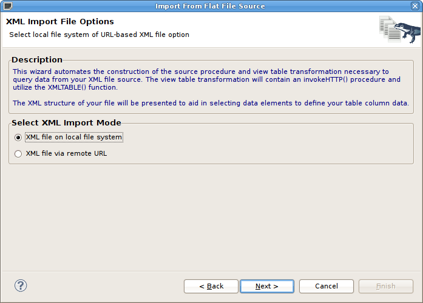 The third page of the wizard, titled XML Data File
Source Selection, requires selection of an existing Flat
File Source connection profile in order to locate the designer source
file folder. Once selected (or created view "New..." button) the
available data files will be displayed in the table. 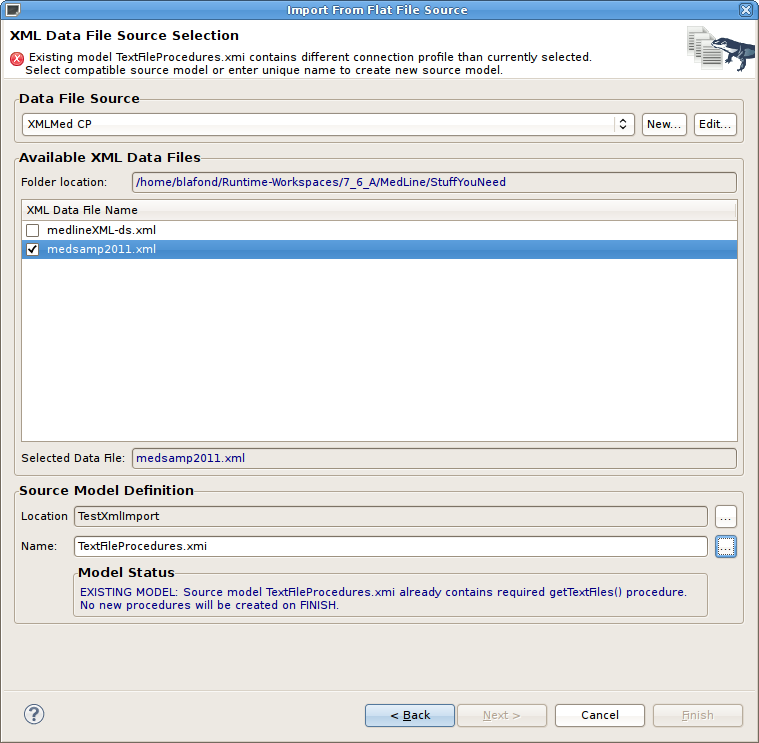 Check/select the xml data file you wish to use to define your view tables. The lower section, Source Model Definition, allows defining or selecting a target source model and location. Note the Model Status sub-section where the status of a source mode (new or existing) will be displayed as well as the action that will be performed on completion of the wizard. The fourth page, XML Data File Import Options,
shown
below,
contains the various parser settings and XMLTABLE() method
and parameter options. The XML File Contents Preview
section displays a portion of the raw xml file contents. 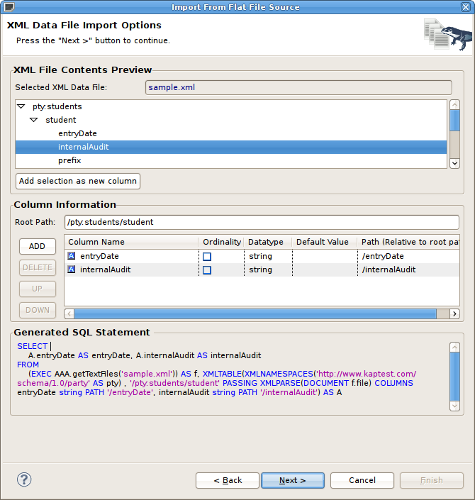 The Columns Information panel contains a Root Path entry and Add/Delete/Up/Down buttons which allow customizing the Generated SQL Statement shown in the bottom panel. When finished configuring your import settings for your XML
data file, click Next > to show the View
Model Definition page. You can change the target location and
target view model and specify a unique name for your new view table. 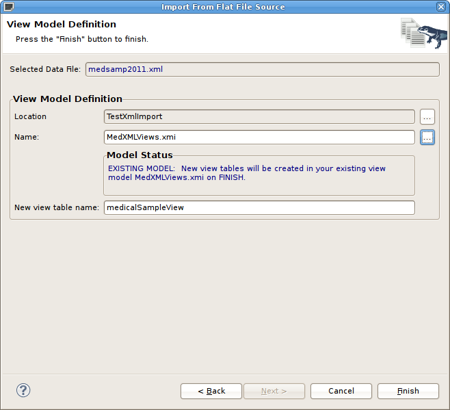 This importer utilizes two new Data Tools connection profiles
tailored to work with Teiid Designer. In the Database
Development perspective, select the Teiid Importer
Connections folder and right-click select New...
action. The following dialog will display the new connection profile
options which include: XML File URL Source and XML
Local
File
Source which correspond to the XML import options
shown previously. 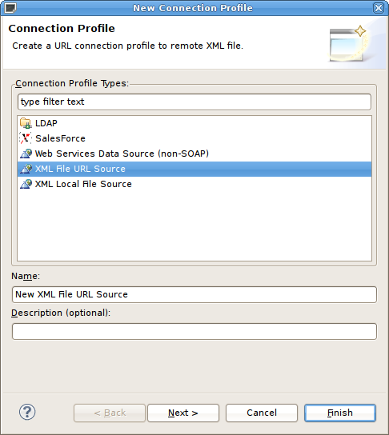 The New Connection Profile dialog for the XML
URL
Connection is shown below and includes a XML
Local File Source field as well as a description of how and
where this profile can be used in Teiid Designer. 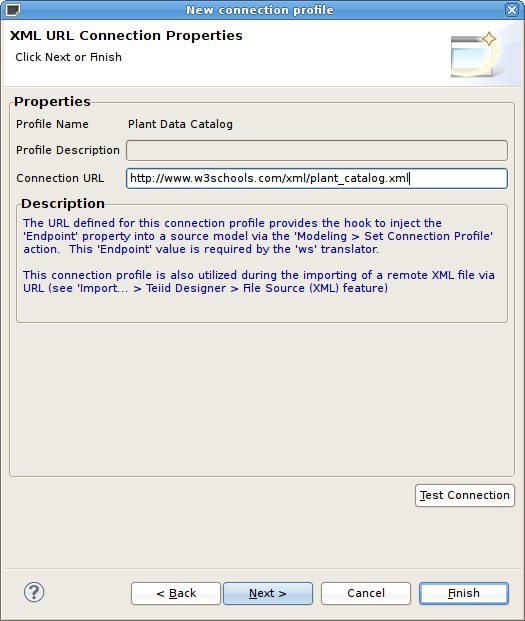 The New Connection Profile dialog for the XML
Local
File
Source is shown below and includes a File
Name field as well as a description of how and where this
profile can be used in Teiid Designer. 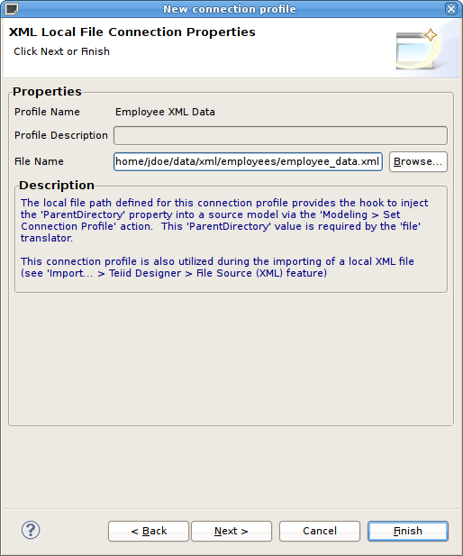 |
Improved Flat File Importer
|
|
|
|
While
architecting the XML Data File importer, the Flat File import wizard
was also modified and improved. (TEIIDDES-1078)
The import option is now labeled File Source (Flat) >> Source and View Model and is shown below in the Import wizard's first page under the Teiid Designer category.
The second page, labeled Data File Source Selection, allows selecting/creating/editing a valid connection profile which in this case contains the relevant folder contain your flat files. Select a single flat file to target for this import by checking an entry in the Available Data Files table. The lower section, Source Model Definition,
allows defining or selecting a target source model and location. Note
the Model Status sub-section where the status of a
source mode (new or existing) will be displayed as well as the action
that will be performed on completion of the wizard. 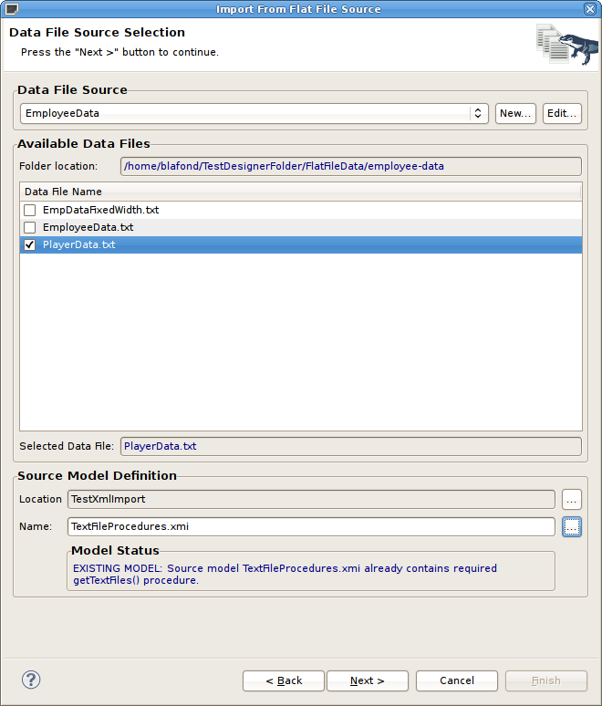 The third page, Flat File Collumn Format Definition, provides a preview of your data file and allows specifying that the data file contains Character delimited or Fixed width format. The selection will determine the details of the next page. 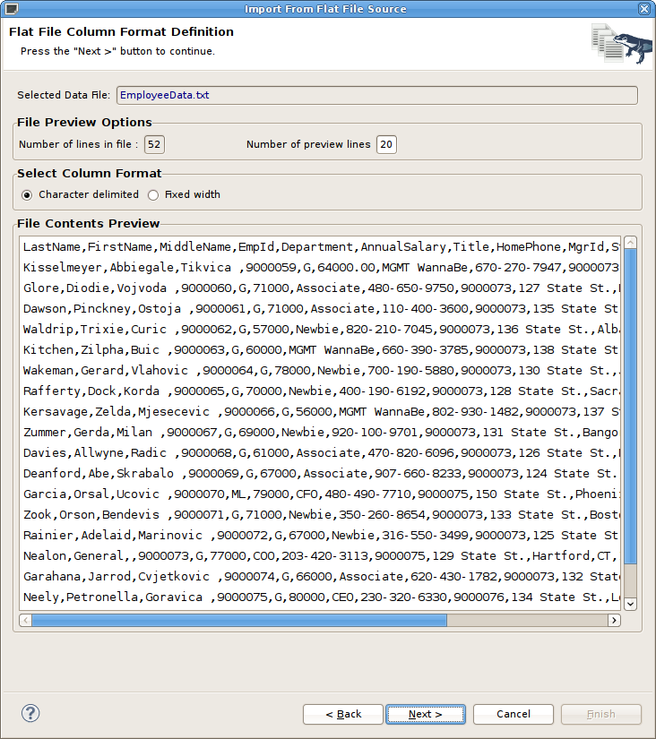 If the Character delimited option is
checked, the fourth page will contain options to specify the delimited
character as well as to view and edit the specific column information
which allow customizing the Generated SQL Statement
shown in the bottom panel. 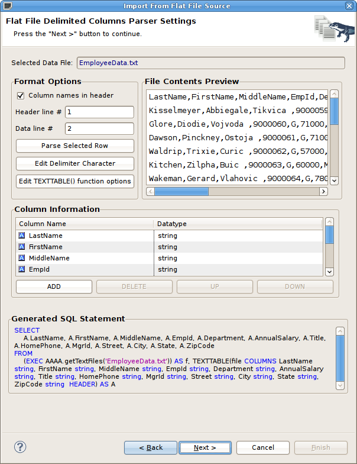 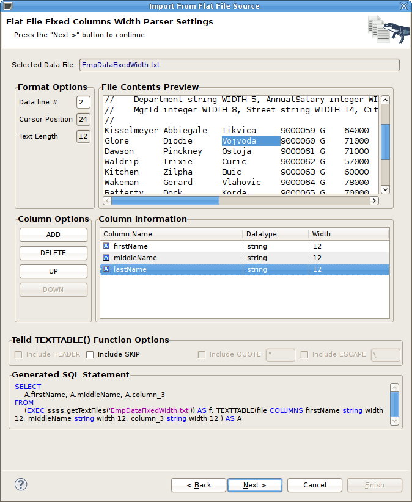 When finished configuring your import settings for your flat
data file, click Next > to show the View
Model Definition page. You can change the target location and
target view model and specify a unique name for your new view table. 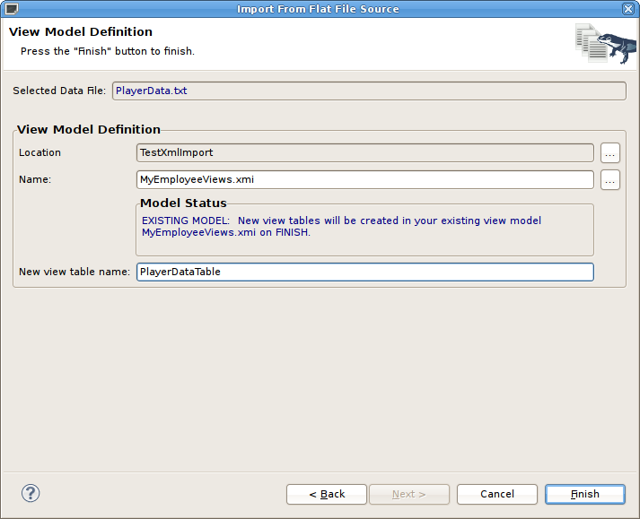 |
New Relational Table Wizard
|
|
|
|
There is a new wizard designed to improve creating relational tables complete with column definitions as well as specifying unique keys and foreign key references. To access the new wizard, select a relational model in your
workpace and right-click select the New Child > Base
Table... action as shown below. Note that you can also launch
this wizard by selecting a relational model child (table, view,
procedure or index) and right-click select New Sibling >
Base Table... 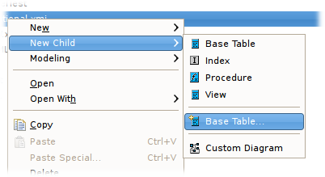 The Create Relational Table wizard contains 5 tabbed panels representing the various properties and components that make up the possible definition of a relational table. This wizard is designed to provide feedback as to the completeness of the relational table information as well as the validation state of the table and it's components. Note that although errors may be displayed during editing, the wizard is designed to allow finishing with the construction of an incomplete table containing errors. The first tab labeled Properties contains
the input for the simple table properties including name, name in
source, etc... 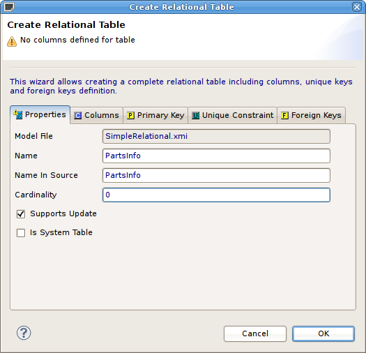 The Columns tab allows creation and editing
of basic relational columns. This includes adding, deleting or moving
columns as changing the name, datatype and length properties. 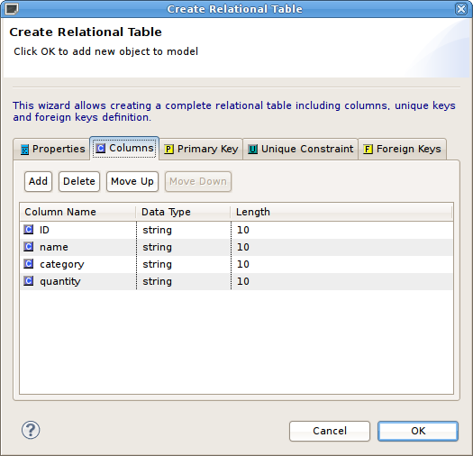 The Primary Key tab contains basic name,
name in source and column definition editing. If wish to include a
primary key for your table, check the Include box and begin editing..
Note that unchecking the box will clear the data. The Unique
Constraint tab contains the identical information. 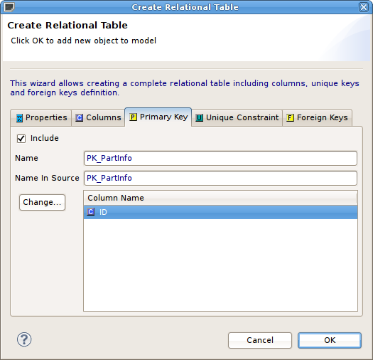 The Foreign Keys tab allows creating,
editing and deleting multiple foreign keys. 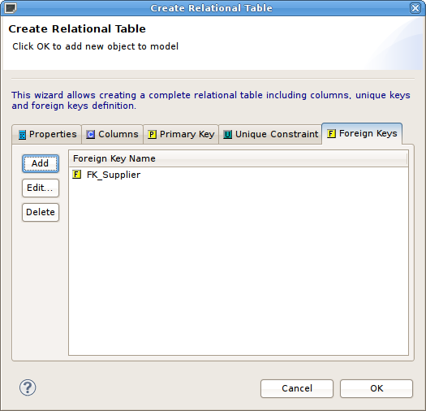 To create a new Foreign Key, select the Add
button and enter/select the properties, key references in the tables
shown below. Note the Select Primary Key or Unique Constraint
table will display any PK/UC existing in the selected relational model.
If no tables in that model contain a PK or UC, then the table will be
empty. 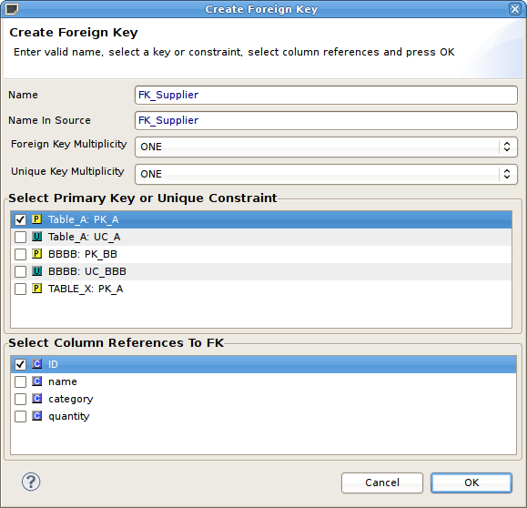 When finished, click OK and your new relational table will be created and added to your relational model.
|
New Model Extension Definition Framework
|
|
|
|
For 7.6, Teiid Designer introduces a new Model
Extension
Definition (MED) framework. This
framework is designed to replace the old way of extending Teiid
Designer's models by creating EMF-based Extension models and applying
an extension model to a relational, relational view, xml document or
web services model. In this way users can design and apply
additional metadata to their model objects (tables, columns, etc...).
This metadata is indexed along with the model objects and is available
to translators through the Teiid VDB metadata. (TEIIDDES-905) The new framework was designed to help:
The MED Editor and accompanying Model Extension Registry View are shown below. Details on this new feature can be found at New Model Extension Definition Feature page. 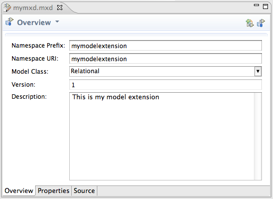 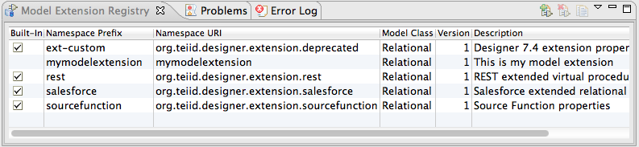 |
New XML Format Relational Model Importer
|
|
|
|
For 7.6, Teiid Designer introduces a new
importer which allows contructing relational objects (tables, columns,
keys etc...) from XML-based model definitions. If your XML file
is based on Teiid Designer's RelationalModel.xsd
schema, then you can import via Import > Teiid Designer
> Designer Text File >> Source or View Models option. (TEIIDDES-1086) On the first page of the wizard, select the Relational
Model (XML Format) option. 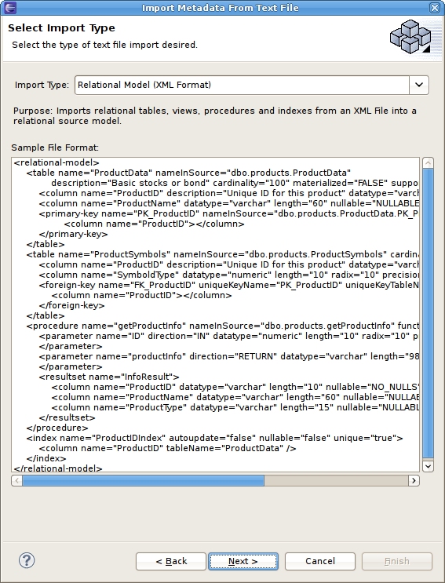 On the next page, browse and select your XML file on your
local file system, browse and select or create a target model for your
new relational objects and click Finish. 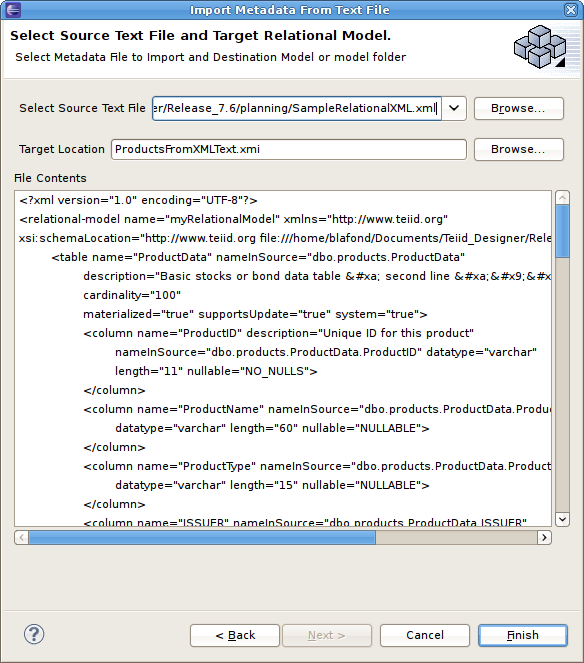 On Finish, your relational objects will be created and added
to your target model. |
|
|
|